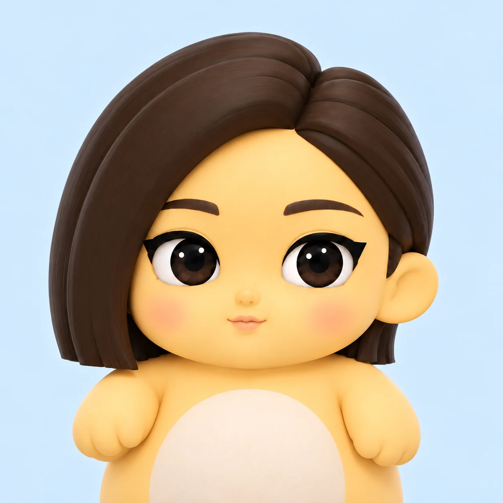

← 返回项目SELECTED PRACTICE / 2026
豆奶AI Character & Content
从角色形象出发，探索它的表达方式、视频内容，以及背后的内容生产与运营流程。
我的参与 / 个人AI角色账号与运营自动化探索CHARACTER / VIDEO / CREATIVE TECHNOLOGY

MEET DOUNAI
让一个角色，
开始讲述。
头像建立第一眼的角色印象，视频进一步组织角色、文字、节奏和声音。这个个人探索把“一个形象”推进到“可观看的内容”。
01 / THE FIRST VIDEO
首条视频，
两个观看比例。
先看成片，再看调整。横屏与竖屏版本分别保留完整画面；通过切换比例，观察角色、字幕和信息在不同观看空间中的关系。
视频暂时无法播放。打开视频文件 ↗
首条视频最终版 · 横屏 16:9 · 约34秒
02 / FROM DRAFT TO FINAL
角色之外，
还要组织画面的
时间与信息。
从初稿到成片
现有素材保留了初版、最终版与竖屏版。初版约 42 秒，没有音轨；横屏最终版约 34 秒，含音轨。版本对照能看到时长、声音与版面上的变化，而不是仅仅展示一个静态角色。
竖屏版本则把同一内容放进更紧凑的观看空间，继续处理角色比例、文字位置与画面留白。
展开初版视频，比较节奏与画面 ↗
视频暂时无法播放。打开视频文件 ↗
03 / AI-ASSISTED OPERATIONS
探索内容背后的
生产与运营方式。
用 AI 辅助编程尝试搭建运营与内容生产后台，把日常配置集中到可操作的界面。当前以后台截图呈现探索进度，不把一个界面等同于完整运营系统。
现有配置界面 · 点击可放大
已呈现
角色头像、视频版本、横竖屏内容，以及一份可见的后台界面。
继续验证
自动化各环节的实际运行与发布状态仍待确认。本项目不主张完全自动发布，也不以流量、粉丝增长或商业化数据作为成果。
CONTINUE EXPLORINGVisual Foundations
↗